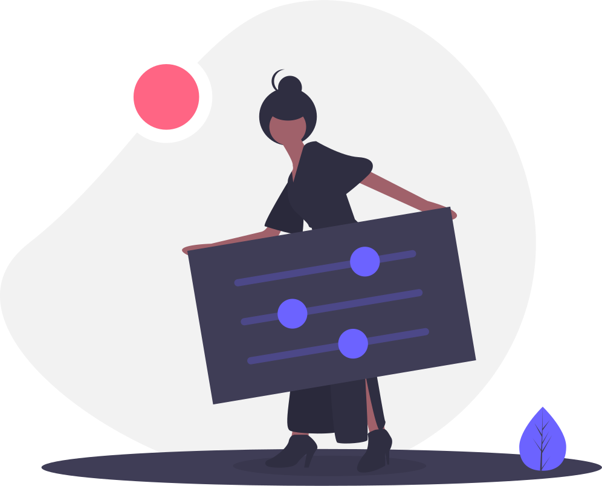

<ion-header>
  <ion-navbar color="primary">
    <ion-title align="center">Settings</ion-title>
    <ion-buttons end>
      <button ion-button icon-only (click)="cancelModal()">
        <ion-icon name="arrow-dropdown"></ion-icon>
      </button>
    </ion-buttons>
  </ion-navbar>
</ion-header>

<ion-content padding no-bounce>

  


</ion-content>